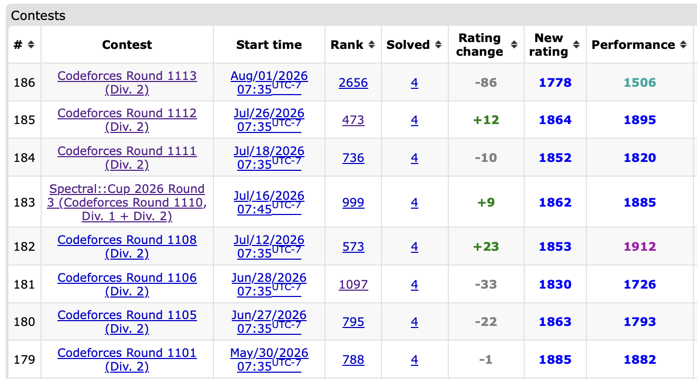

July 1st-15th
It’s the second half of 2023, and outside of CodeForces, there has been updates on my life. Mainly that I have been accepted into my first ever co-op position with Global Relay. I’m very excited and greatly look forward to this new opportunity to apply my learnings in this competitive programming journey to a meaningful real world use. Don’t worry though, this journal log will continue though during my co-op, because I enjoy these sort of problem solving challenges, and looking back, the depth of DSA knowledge I’ve learnt from these contests were one of the key factors in me being accepted to this position. To top it all off, I am also on an incredible streak in CodeForces. I’ve broken the 2100 Master threshold, and my last 5 contests have all been at least 1900-rated performances or higher, an all time longest streak. Surely I’m excited to keep this momentum going.
Interestingly on the above streak note, the longest streak of CM-level and above performances has been 9 contests from July 2024 to Dec 2024. I at least had a recentish streak of form from Oct-Nov 2025 of 6 CM-level or better performances, but now it’s recently been at best middling.

Then again, the above streak which I was all happy with myself include a Div 1 contest with 1 problem solved and an educational round with 3 problems solved. Is it consistency to solve 4 problems each contest or inconsistency to solve 4 problems each contest regardless of actual problem difficulty?
Yeah, that last part of the paragraph was a really bad transition. If only the contest in this log actually went that well.
Round 884
Problems Solved: A, C, D
New Rating: 1955 (-176)
Performance: 1064
Days of Our Lives Programmers theme, if you want it for your enjoyment or my schadenfreude
No, I won’t bring the dramatic Days of Our Programmers monologue for this recap, much to the chagrin of anyone reading this. This contest really was a combination of a catastrophic misplay that was amplified by some sloppy execution in C and D, but also really bad luck.
First, the catastrophic misplay, ie. Problem B the question that started this disasterclass. The initial start of the problem is simple; I saw that the MEX value of a subarray depended on its values, and that if it contained values 1 to p-1 but not p, the MEX is p. Thus I made a sieve to determine the possible prime values.
It turns out that by this first step I was already dead lost. I made about 8 attempts on this problem to no avail, mainly due to the fact I didn’t find that 2 4 1 5 3 is another optimal primality setup for n = 5. The answer for this problem is really just infuriatingly simple.
A run down of B’s solution
If n <= 2, the order doesn’t matter (obviously). Otherwise, place 2 and 3 at the ends and 1 dead in the center of the array. Done.
Yep. The solution to B can be explained in half the required characters of a tweet. I can understand how placing 1 in the center is best due to how quadratics work, but as for how MEX = 5,7,11 does not have to be considered still baffles me. I’ll just let the tutorial directly explain here.
note that we don’t even need to sieve for primes!
I have no words on this final line.
With this question, I pretty much burnt the first half hour on it, and then about the last 70 minutes on it in futility. That said, C and D didn’t really help either. C had 2 failed attempts due to myself screwing with my dp ideas for solving the problem, and it turns out my first attempt on D was already sufficient (somehow.) Link to resubmitted first attempt that passes anyways
Why I resubmitted D
The example cases somewhat display this, but the important rule is that in the row-major order, two of the same character cannot be x units apart, where x is a factor of n and x != n. In an example like abcba, the a’s are 4 units apart, and this is a valid string since the factors of 5 are just 1 and 5. The more optimal method for generating the string with fewest distinct characters is to find the smallest natural number x that is NOT a divisor of n, and to cycle through the first x chars of the alphabet for the whole string. This is optimal because if we were to use x-1 unique chars, either we have two of the same char with a gap under x-1, or we repeat the chars in order to get many gaps of x-1, both of which would divide n by our definition of x. This is what I did in my second attempt.
What I did in my first attempt was to find all the factors of n, and then when adding in each new char to the string, I checked with each char several indices back relating to these factors to make sure no violations occurred. This somehow clears in under 2 seconds, the issue here is that n can go up to 1000000. A such problem case is in the highly divisible number 720720, which contains 240 factors. With some rough calculations, this could result in about 240 * 720720 = 173 million operations, which should not be possible in Python assuming about 20 million calcs/second. This does slightly overestimate the operation count but I did test this on my own computer and it took about 20 seconds, so I have no clue how it is tenfold in pace on the judging machine.
That said, I at least solved C and D, which is also why this didn’t end up as a drama episode despite the satrically large rating loss. Solving A/C/D would place me above everyone that got A/B/C, even with the large timeloss from initial B attempts, but I ended up losing to several people with only A/B/D solves. It distracts from the bigger issue that a lot of people happened to solve C and D. It may have been a Div 1 + 2 contest, but 36% of competitors solving D is extremely rare. I could’ve made an attempt at E but that wasn’t much better since while 5600+ solves were on D, E only got 422 solves. The problem rating gap between D and E is expected to be around 1000 points, with D being rated 1350 and E about 2350. So you get the perfect storm of a collapse on B, bad execution on C and D, and a difficulty curve that really did not help me.
By all of this, it does mean that my run on this contest, while definitely atrocious, doesn’t feel like my worst underperformance. It just happens to have a -177 rating change, which is bad, but I’ve recovered from this.
July 16th-31st
Round 887
Problems Solved: oof
New Rating: 1874 (-86)
Performance: N/A (my tool says 1602, but proper evaluation of a contest with zero solves is not really possible)
Days of Our Programmers
I really thought this show was over. Since Educational Round 145 I had completed 18 contests in a row without major implosion, and it allowed me to reach Master. It should’ve ended there. This mockery of my comedic self destructions should ceased from there. But alas, here we are. Let’s get this over with.
The Proponent of Python’s road to competitive glory has recently unveiled once hidden troubles. Since late March our protagonist had been on a solid streak of progress to reach the unprecedented heights of Master. Even if this 2100 rating barrier was partially built on favorable conditions the execution of the ordeals was swift and consistent. Now though, an unsettling flaw is showing. The previous 884th round removed the Master title from our protagonist in dramatic fashion. A combination of unfortunate problem setting luck and an old menace in the Div 2B permutation problem caused a catastrophic collapse. Regardless, hopes are still high for the Dragon. He is only 176 points down from his peak, and he now looks to Round 887 for redemption. There is much to support this hope. A recent LeetCode contest brought our writer to the top 0.4% on the website. This 2400+ barrier crossing should be more than enough momentum to succeed in Round 887. Or so we think. Let us flash back to a previous time:
Back in February, our Protagonist wrote of his grand exploits in Starters 78. It was a fine contest in which the writer all but committed the great sin of unintentional sandbagging to take a silver medal, just one short of a Division 3 contest win. He then proceeded to boast of his accomplishment by ranting on the flawed rating system on CodeChef. This “momentum” led to being one problem short in the following ICPC regionals. Then we come back to the current age, where our protagonist is actually boasting of a top 100 200 finish in a Leetcode contest where the problems and their difficulty have little similarity to a Division 1 CodeForces contest. This is truly disgraceful. Have I not learnt that the moment I even let a shred of overconfidence into myself that it usually leads to a collapse? I got completely kicked in the mouth in the previous contest and I was really delusional enough to claim luck as a factor there.
There’s no point in the garbage dramatic persona here, because what happened here was abject self destruction. No problems solved. Nil. You want to know the last time I screwed a contest this badly? Round 858. The same contest with my greatest rating loss where a fitting episode detailing that implosion was made. That contest I only got 2 problems in a Division 2 level contest. You can consider myself lucky that I was in Division 1 here since after analysis of their B problem, I’d have likely dropped even worse with overcomplicating it there. And guess what? Remember the dumpster fire that was my slide from CM to Specialist? I’ve done it again. Master to Expert, but now in less time than I take to write these journal entries. Incredible. There isn’t any submissions on A during the contest but really this was because for inane reason, I kept trying to figure out the remaining values after the operations, completely useless info. The eventual solution is blatantly simple in which you just have to figure out how many values less than x are left after the operations. Does it matter if you know if x is removed or not of course it doesn’t. The lowest x value returning 1 value not removed will always be the lowest. Another way to put it is that the solution to A is to RUN O(N) TESTS TO BINARY SEARCH THE ANSWER. This pattern has shown up OVER and OVER again and for TWO hours I did not even bother considering it. It’s one of the most fundamental patterns in these problems, and shows up nearly every contest, and I decided that going for an approach that is O(way too long) was a better solution. And look where I am now. I’m basically back at the same level as the start of the year, hell even the summer of last year. This is a wakeup call. The last thing I want is another failure in October’s regionals, but repeating these blunders and idiocy is simply insanity. Actually goose egging a contest. What a bloody joke.
Part of how I ended up finding reasonable success in competitive programming was through the standards I put myself to. That said, most of this ranting did not really end up helping me in the long run. And from recent years, even if Leetcode is significantly easier overall, it has been a surprisingly useful contest system for me to relax with when I do get frustrated with myself in CodeForces. Unrelated, even my CodeForces performance nowadays is less correlated with how I feel on actual ICPC competitions now. CF does have the most similar problems to ICPC, but there are differences in CF having less implementation focus and rarely any geometry type problems.
I guess what I’m saying here is really just “please enjoy game”. Surely if everyone has that mindset then cheating would be resolved as a problem.
Also even less related but I did end up peaking above 2600 in Leetcode. It does help somewhat that their cheater removal process is much more open (you can see the users that get removed from the ranklist by comparing to post contest and some time around Thursday when ranks are finalized) and appears to be reasonably effective. Even still there are cases where I can miss the 4th problem in LC contests, so it’s possible for me to push higher.
Educational Round 152
Problems Solved: A, B, C, D
New Rating: 1952 (+78)
Performance: 2153
See, this is just proof that the previous contest was not what I was capable of. I’d have liked to get problem E but even though it was simply out of my ability. My efforts there at least showed reasonable thought in building possible solutions and providing counter examples. The first 4 problems though are what I should be doing: clean and efficient execution. C and D in particular are well done for the fact I didn’t give wrong submission and both were completed in under half an hour each. It’s a low bar compared to past contests but for a get right contest, not screwing it up is a positive change.
Quick thoughts on C and D
C has two observations. First is that a query like [1,6] and [4,6] on the string 000110 are effectively equivalent, so the first part is to adjust the left boundary to the leftmost 1. Secondly is that only the number of 0’s in the segment matters since they will be sorted anyways. With these in mind, all that is needed is to keep track of the closest 1 to the right of each 0, and the number of 0’s in any segment of the string, for which a segment tree can be used. A sparse table can also be used with exact query methods which also takes O(log n) per query.
As for D, it feels like a brute force problem, and honestly, it is one. The idea is that as long as you don’t waste a possible free painting of a tile, you will reach the optimal total. You can track if you have a free tile paint depending on the current value painted and by storing this info in a boolean. What proceeded to occur with my submission is a throwback to 2017 coding, back when all I did was control flow spam.
This is the point when I remember that I did refactoring on Contest Submission Archive to make it more useful for other users wanting to use a similar archiving system. In doing so I also rearranged my archiving folder structure meaning that it’s likely that nearly ALL of the links involving this repository are broken.
Frick.